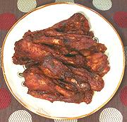

|
Buffalo Duck WingsCalifornia | ||||
| Serves: Effort: Sched: DoAhead: |
8 app ** 5 hrs Yes |
Asian markets here in Los Angeles move a lot of duck, but wings aren't a big item so they're plentiful and affordable (2009 US $1.49/#). They're larger than chicken wings with a deeper flavor. | |||
| Traditional accompaniments for Buffalo wings are celery sticks with blue cheese dressing and lots of beer - but I've found a sound red wine goes a lot better with these. Don't open that $40 bottle, this is food for barbarians not epicures - your palate will be in no shape to discuss the nuances of vineyard and vintage. | |||||
|
|
8 1 2 ------ 8 3 8 1 2 ------ |
# qt ---- T T T t T ---- |
Duck Wings (1) Stock (2) Bay Leaf -- Marinade (3) Hot Sauce (4) Paprika, sweet Olive Oil Salt Chili Paste (5) ------------ |
Prep
|